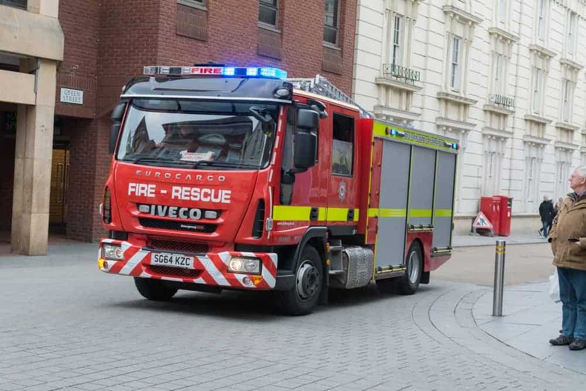
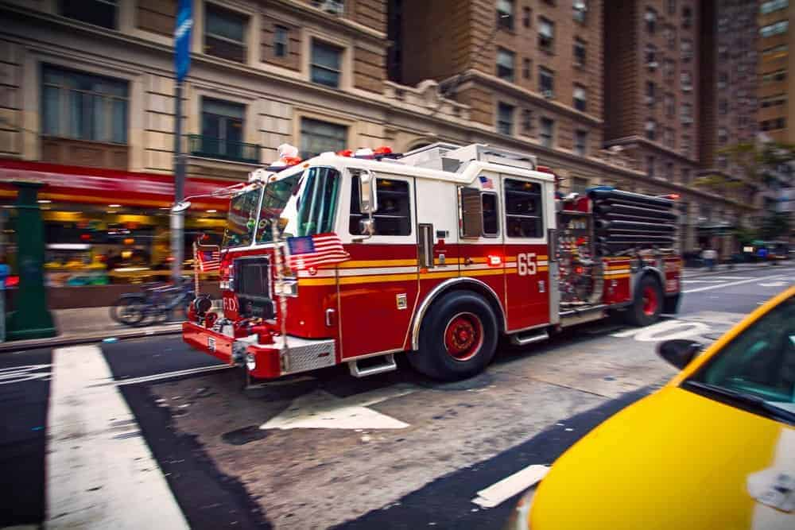
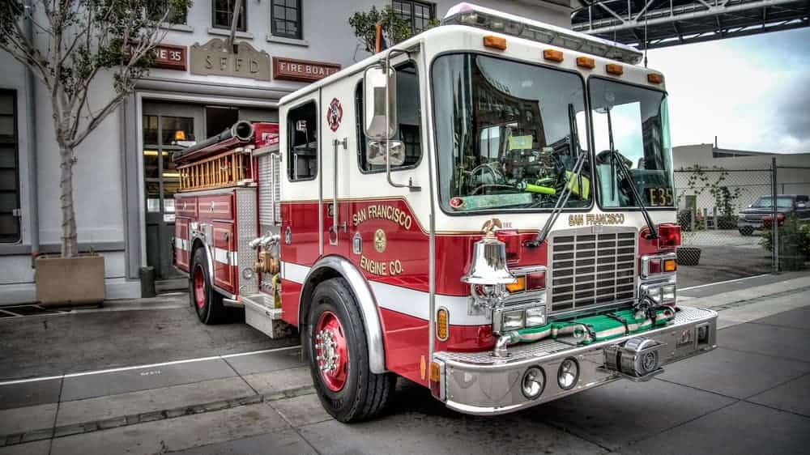
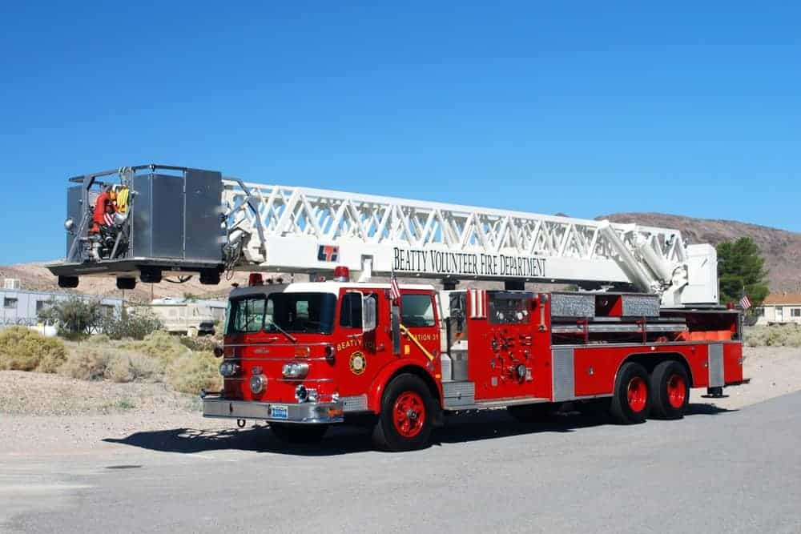

| Firetrucks | |||
|  | Fire Engine Used in 38 fires Available The water tank usually contains hundreds of gallons of water which is the main water source used by the firefighters to help extinguish the fire. They keep using this to create a powerful stream of water until they are able to connect to a fire hydrant which is water connection point that helps them tap into another water supply. Needless to say, fire hydrants are a very vital part of active fire protection. |  | Pumper Truck Used in 17 fires Available These are one of the most commonly used fire apparatus by most fire departments and are also often called ‘triple combination pumpers’. |
|  | Fire Truck Used in 30 fires Available The main distinguishing factor that separates the truck from the engine is that the former is the actual rig with a big ladder. This is what gives fire trucks their true distinction. It is specialized equipment that is called out for structure fires and similar situations that require extra manpower and emergency firefighting gear. |  | Turntable Ladder Truck Used in 23 fires Unavailable This is a special aerial apparatus that makes use of a large telescopic ladder in order to gain access to those areas that are at quite a height. |